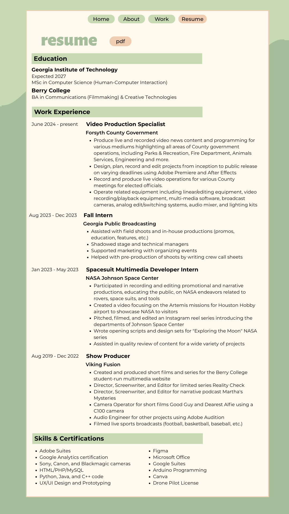

Alyssa
Home
Resume
Switch Mode
My Resume
Experience in Media Production & UX/UI Design

Skills & Expertise
Media & Audio
Video Editing (Premiere Pro)
Audio Engineering
Digital Storytelling
Tech & UX
UI/UX Design (Figma)
HTML/CSS/JS
Wireframing & Prototyping